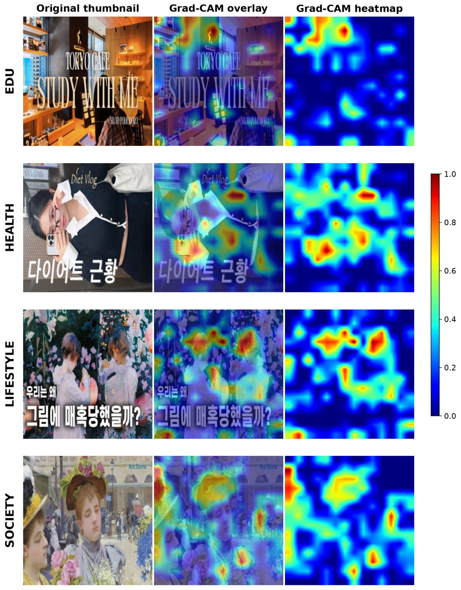
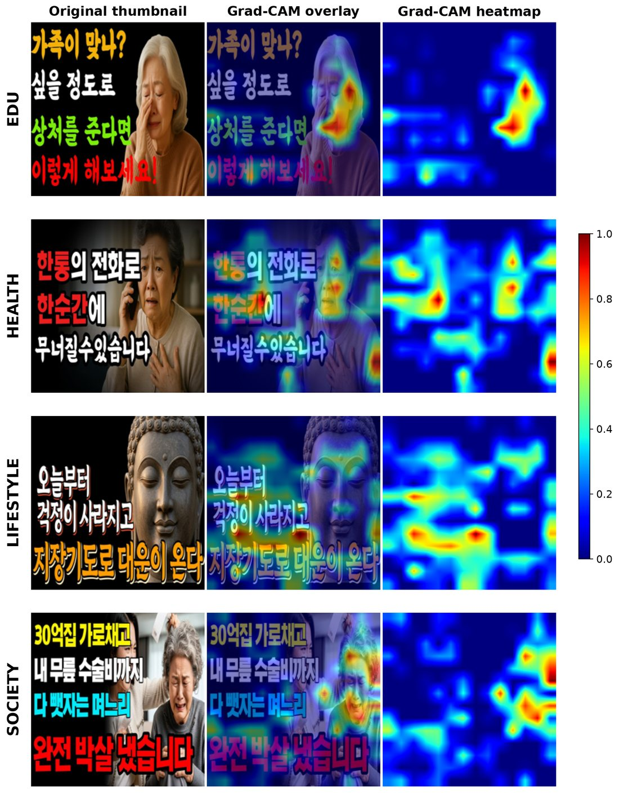

Education thumbnails, redesigned for each age group
For each education video, we made two thumbnails from the same footage. One follows the visual patterns of channels watched mostly by 18–34 viewers. The other follows the patterns of channels watched mostly by viewers aged 65+.
18–34 recipe
- Full-bleed scene, no color panel
- Brighter overall image (EDU mean brightness 134 vs 101)
- Less of the frame given to text (26.5% vs 39.6%)
- Softer contrast between text and background
65+ recipe
- Split background with a solid text panel
- Larger, bolder on-image text
- Stronger text–background contrast (saturation gap 26.9 vs 13.8)
- More saturated color (84.3 vs 75.4)
Behind the samples: four categories, 9,586 videos
After the current-affairs analysis on our poster, we extended the same approach to four informational categories of Korean YouTube. In each category we compared channels whose main audience is 18–34 with channels whose main audience is 65+, using equal numbers of videos per group.
Data
| Category | Subcategory | Videos | Per group |
|---|---|---|---|
| EDU | Psychology education | 2,496 | 1,248 |
| HEALTH | Wellness | 2,500 | 1,250 |
| LIFESTYLE | Meditation | 1,990 | 995 |
| SOCIETY | Current affairs | 2,600 | 1,300 |
Age groups are channel-level labels: the main audience of each channel, from Vling audience data. Categories were chosen for viewership spread evenly across ages.
How we analyzed each video
- Locate
Where does the age signal sit?A DINOv3 classifier with Grad-CAM shows which image regions predict each group.
- Measure
13 visual featuresText area (OCR), color, people and estimated face age, and an AI-image score.
- Describe
What the scene showsLLaVA captions grouped into scene themes with BERTopic, plus SHAP keywords.
- Read
How titles are written26 title features and a KLUE-RoBERTa model explained with LIME.
Some differences show up in every category
Pick a feature to compare the two age groups across all four categories. Formal features such as text amount, contrast and title length point the same way almost everywhere.
Text area ratio
Group means. Stars mark two-sided Mann–Whitney U tests: *** p < .001, ** p < .01, * p < .05, n.s. = not significant.
Recurring in 65+ channels
- More on-image text and sharper text–background contrast
- More saturated, darker thumbnails; older-looking faces
- Longer titles, complete sentences, list patterns ("5 ways…")
- More native Korean vocabulary
Recurring in 18–34 channels
- Brighter images with little text
- Text that blends into a cohesive overall tone
- More brackets and emojis in titles
- More loanwords and newer expressions
For 65+ thumbnails, the signal sits on text and people
We took the 50 most confident correct predictions per group and measured how the Grad-CAM heatmap energy was split across text, people and background.
Share of heatmap energy
What this means for design
The 18–34 signal is spread across the whole scene, so no single element carries it. The 65+ signal is concentrated: large text and people do most of the work.
This is why the 65+ samples put the title on its own solid panel. The 18–34 samples keep the scene intact and let the image carry the mood.
Thumbnail-only accuracy by category: EDU 82.2%, HEALTH 72.1%, LIFESTYLE 86.7%, SOCIETY 74.9%.


Meaning changes with the topic
Unlike the formal features, what the thumbnails and titles are about differs by category. Both groups cover a similar topic, but each brings a different side of it to the front.
- DoneCurrent-affairs analysis
6,758 videos, the study on our poster. - DoneFour-category extension
EDU, HEALTH, LIFESTYLE and SOCIETY; 9,586 videos. - DoneAge-aware EDU samples
Four topics, each in an 18–34 and a 65+ version. - NowUser study
Preference testing with viewers from each age group.